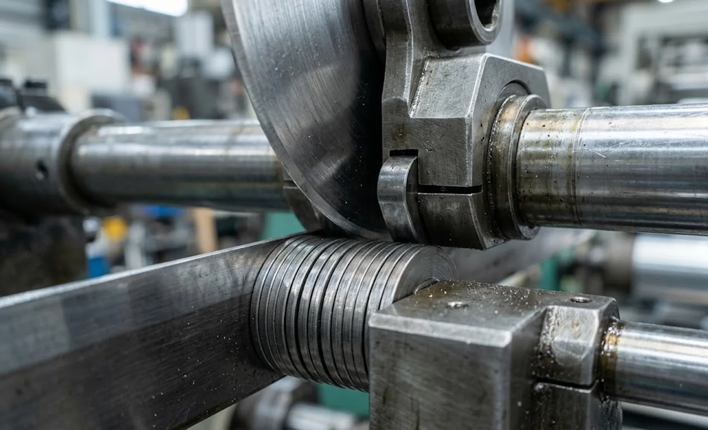
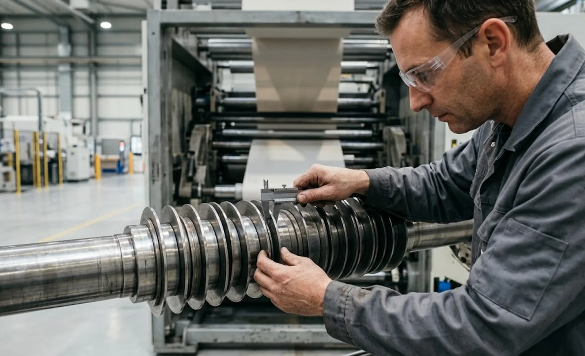

Published October 12, 2026 | By HDPTH Technical Editorial Team

Narrow lanes sell machines and then disappoint them. A quotation can list a 6–1600 mm width range and be technically true, because the working width is the web, not the lanes. Whether your narrowest product is producible is decided by the geometry of the cutting station: the bottom knife, the top blade wrapped over it, the holder that carries it, and the spacer stack that separates adjacent cuts. The methods are compared in our razor, shear and score guide, and each pays a different price at narrow widths. This guide walks through those limits and the specification points that keep narrow-lane promises honest.
Why shear slitting has a width floor
In shear slitting the web wraps the bottom knife band, so the band consumes a few millimetres of lane width before the top blade even arrives. The blade overlaps the band by the amount set in our knife clearance and overlap guide, adding more, and the holder arm must reach the web without colliding with adjacent stations. Standard bottom bands, 60–90 mm blades and conventional holders put the practical floor around 12–25 mm depending on material. Reduced-width bands and compact holders push the floor down, but every millimetre shaved from the hardware reduces bending stiffness — a thin bottom band carrying a deep cut flexes under load, and the first symptom is a wandering cut line. The floor is a stiffness trade agreed for a specific material and thickness.
Razor and crush: narrower, but with different limits
Razor blades are a fraction of a millimetre thick and need no bottom band, so razor setups routinely cut lanes of 3–10 mm in films, nonwovens and thin laminates, and crush cutting is similarly narrow-capable. The cost appears in edge quality: razor edges fuzz on some films and bulky nonwovens, and crush edges carry dust and need frequent blade changes on abrasive webs. Narrow capability must be judged against the edge class your product accepts, not width alone. A web-side limit neither method escapes: once the strip between cuts is a few millimetres wide, its lateral stiffness approaches zero, and spreading, flutter and tension transients displace its edges by more than any tolerance.

Spacer stacks and knife shafts at narrow pitch
Between two cuts there must be room for two bottom bands and the spacer hardware that sets the pitch. At narrow widths the stack is dominated by thin washers, which stacked in numbers behave like a spring: side loads from blade contact and web tension deflect the assembly, showing up as lane-to-lane width variation. Shaft diameter is the lever — a larger shaft accepts stiffer stacks but consumes space between stations and limits how tightly blades can sit. Ask suppliers how they dimension the stack for your narrowest pitch, whether spacers are ground parallel within a few microns, and how the stack is locked against axial creep. A supplier who can show a stack drawing for your pitch is far more credible than one who answers with an overall width range.
Tolerance, edge class and the narrow web at rewind
Narrow lanes punish tolerance budgets twice. The tolerance discussed in our slit width tolerance guide still applies, but the same absolute deviation is a larger fraction of a 10 mm lane. Second, the narrow strip is hard to handle: it flutters between cuts, is sensitive to the spreading discussed in our spreader roll guide, and at the rewind builds a crown quickly unless taper and nip are controlled. Specify width tolerance and edge class per product, and ask which one governs the narrow-lane design. Where many narrow lanes run side by side, automatic positioning — see our automatic knife positioning guide — also earns its keep, because re-tuning twenty narrow stations by hand erodes the output the narrow work was meant to add.
What to put in the RFQ and the FAT
Write the narrowest product into the request for quotation as a named requirement: exact lane width, material and thickness, number of narrow lanes per web, tolerance, edge class, and whether the lane carries a core. Require the supplier to state the slitting method proposed for that lane, the hardware it needs, and the narrowest lane demonstrated on comparable material. Then make the factory acceptance test prove it: run the narrowest product at production speed, measure lane width over time, inspect edges, and check the narrow lanes hold tension through acceleration. If your product mix is still being defined, a pilot trial as described in our pilot selection guide settles the width floor with data instead of catalogue claims.
Need narrow lanes in your product mix?
Send HDPTH your narrowest product — width, material, thickness and tolerance. We will state the slitting method and hardware for that lane, show the spacer stack design, and demonstrate it on your material before you commit.
Submit Your Project InquiryFrequently asked questions
What is the narrowest lane a shear slitter can cut reliably?
With standard shear hardware, practical minimum lane widths fall between 12 and 25 mm depending on web thickness and material: the bottom knife band, the wrapped top blade and the holder all need room. Reduced-width bottom knives, smaller blades and slimmer holders push the limit lower. Below roughly 10 mm, most converters move to razor or crush slitting, where the minimum is set by web stability, not knife hardware.
Why do narrow lanes lose slit width tolerance so easily?
The tolerance on a narrow lane is set by the whole knife and web system, not the blade alone. A thin spacer stack has less bending stiffness, so small side loads deflect the bottom knife band. The narrow strip between cuts also has very low lateral stiffness, so flutter, spreading and tension waves move its edges far more than the tolerance band. Specifying tolerance separately from machine capability is how these effects get confused.
Does razor slitting always allow narrower lanes than shear?
Generally yes, because a razor blade is a few tenths of a millimetre thick and needs no bottom band or holder overlap, so lane pitch can be tighter. Razor edges are acceptable on many films and fine for widths a shear blade cannot occupy. The trade-off is edge quality: razor edges fuzz and curl on some materials, so narrow capability must be judged together with the edge class your product accepts.
How do I tell a supplier what narrow width I need?
State the narrowest product, not an average: exact lane width, material and thickness, number of narrow lanes per web, tolerance, required edge class, and whether the lane carries a core. Ask the supplier to confirm in writing the slitting method proposed for that lane, what hardware it needs, and the narrowest lane demonstrated on that material at production speed.
What should FAT include for narrow-lane work?
The factory acceptance test should run your narrowest product, not a convenient wide-web sample: measure lane width over time against tolerance, inspect edges for fuzz, burr and dust at production speed, verify the narrow lanes hold tension through accel and decel without wrinkling, and record spacer stack assembly and knife settings so the recipe reproduces at your plant. A trial without the narrow lanes actually running proves nothing.
Can narrow lanes be added to an existing machine later?
Sometimes. If the slitting method, shaft diameter and spacer hardware already support the width, adding lanes is a hardware order. But many older machines cannot go narrower because their bottom knives, blade holders or web path were designed for wider products, and retrofit space is limited by shaft diameter and unwind width. A structured assessment against your narrowest product tells you quickly whether the capability can be added or must be bought.